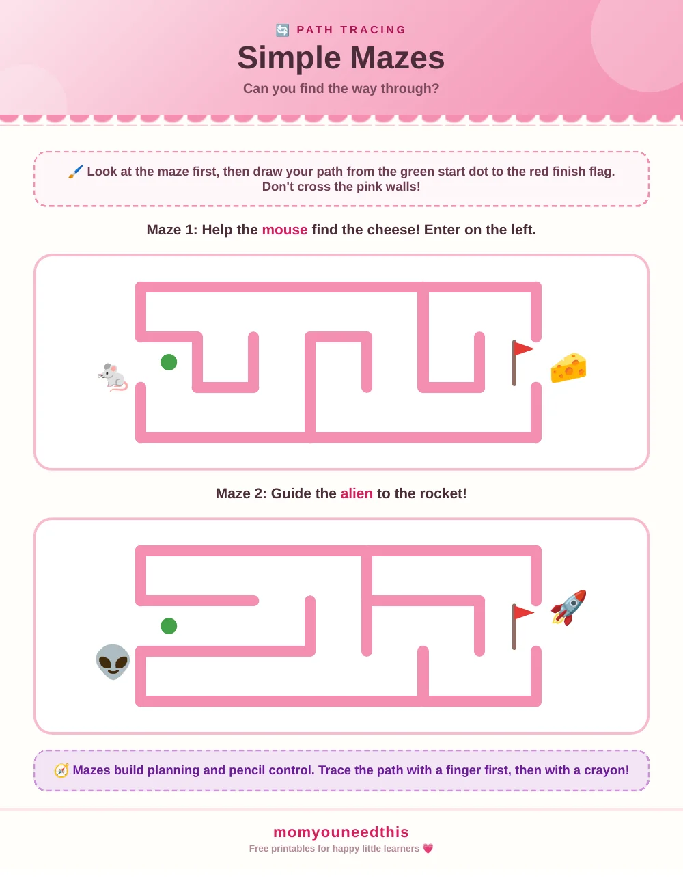

Easy Mazes Printable Simple Mazes for Kids — Try Your First Easy Mazes
Help your child try their very first mazes with a printable worksheet designed for little hands — wide paths, friendly themes, and no wrong turns that frustrate.
Quick Answer
This easy mazes printable gives toddlers and preschoolers their first maze experience with wide, forgiving paths and friendly themes. Download and print at home with no signup needed — perfect for building planning skills, careful pencil control, and the confidence to solve puzzles independently.
At a Glance
- Ages: Toddlers and preschoolers
- Activity: Easy first mazes
- Skills: Planning skills and careful pencil control
- Format: Printable worksheet (PDF)
- Cost: Free, no signup
🧩 What Are Simple Mazes?
Children find their way through easy mazes with wide paths and clear goals, like helping a puppy reach its bone. Simple mazes teach planning — looking ahead before moving — while keeping every path solvable for beginners.

🖨️ Download Your Free Path Tracing Printable
Trace through each maze from the green start dot to the red finish flag, staying inside the wide path. If you hit a dead end, just back up and try again! Print it out, grab the crayons, and you're ready — no signup needed.
⬇️ Download Free Printable 🖨️ Print(opens in new tab)🎁 Free printable for toddlers & preschoolers
How to Use These Mazes, Step by Step
- Eyes first. Before any crayon comes out, look at the whole maze: find the green start dot and the red finish flag, and just look for a path between them.
- Finger second. Trace the route with a finger, slowly. A finger can back up without leaving a mark — most wrong turns get caught at this stage.
- Crayon third. Now draw the line, following the path the finger already travelled. Staying inside the path is the whole skill; speed is not.
- Dead end? Good. Back up to the last turn and try the other way. Reaching the flag after a dead end is worth more celebration, not less.
Work the sheet top to bottom over a few days rather than all at once — the mazes grow trickier as they go, and stopping while it is still fun keeps tomorrow's maze welcome.
🔍 Maze Detective Game
Before tracing, let your child study the maze with just their eyes and point the way with a finger. Then trace it — planning first makes solving feel like a real detective victory!
💡 Why Practice Path Tracing?
Mazes are powerhouse activities: they build visual planning, problem-solving, persistence, and fine motor control all at once. Starting with simple, wide-path mazes ensures early success that motivates children to try harder puzzles.
🌀 Easy Mazes Printable
This easy mazes printable is made for first-time puzzlers. Wide paths, clear starts, and friendly finishes mean toddlers can solve every maze without frustration. Our easy mazes printable collection is free to download and print.
The best easy mazes printable pages build pencil control and problem-solving at once. Kids plan a path, follow it carefully, and learn to back up and try again when they hit a dead end. Start with a finger, then try a crayon.
Tip: print this easy mazes printable on thick paper and laminate it — dry-erase mazes can be solved again and again.
❓ Path Tracing FAQs
What are simple mazes for toddlers?
Simple mazes are beginner puzzles with wide, easy-to-follow paths and a clear start and finish. They teach children to plan ahead and persist through challenges while building careful pencil control.
Are these path tracing worksheets really free?
Yes — every printable on MomYouNeedThis is 100% free to download and print. No signup, no payment, just tap the download button.
How do I use these path tracing worksheets with my child?
Print the worksheet and let your child trace each path slowly, following from start to finish without going off the track. Begin with a finger, then try a crayon, and celebrate reaching the end of every path!
What age is an easy mazes printable for?
An easy mazes printable is designed for ages 3 to 5. Toddlers can trace with a finger first, while older preschoolers can use a crayon and solve mazes on their own.
📚 Keep Exploring
- 🎁 Back to Path Tracing Free printable curve path tracing pages for toddlers.
- ⭕ Circle Paths Free printable circle path tracing worksheet for toddlers.
- 🌀 Loop Paths Free printable loop path tracing worksheet for toddlers.
- 🌊 Wave Paths Free printable wave path tracing worksheet for toddlers.
- 🚗 Road Paths Free printable road path tracing worksheet for toddlers.
- 🐻 Animal Paths Free printable animal path tracing worksheet for toddlers.
- ✏️ Mixed Paths Free printable mixed path tracing worksheet for toddlers.